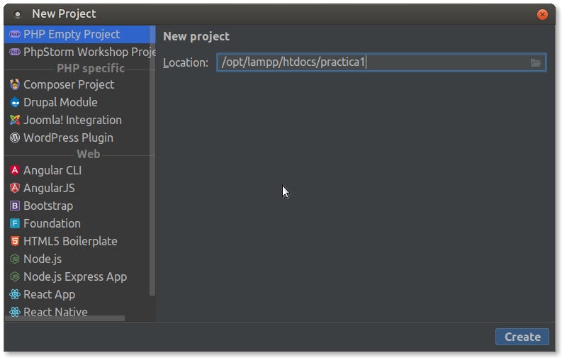
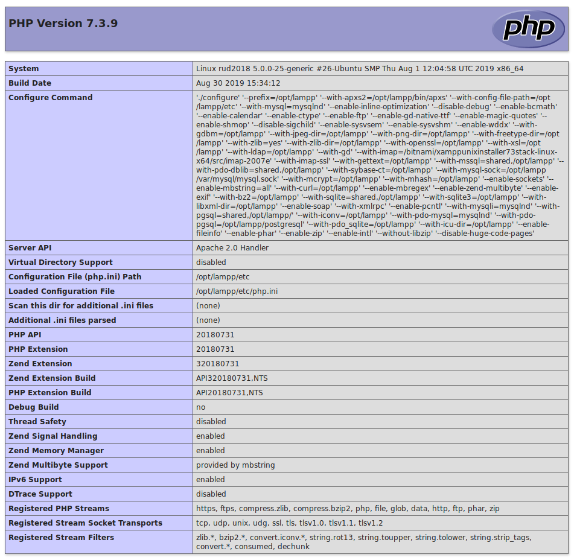

Preparant l'entorn de desenvolupament
Per a poder provar els nostres llocs web necessitarem instal·lar una sèrie d'eines com són: el servidor web Apache, el mòdul PHP per a aquest servidor, el SGBD MySql, un front-end per al SGBD (PHPMyAdmin), etc.
Per simplificar les coses optarem per instal·lar-ho mitjançant XAMPP, un paquet de programari lliure que conté el servidor HTTP Apache, la base de dades de MySQL i eines necessàries per utilitzar el PHP i el llenguatge de programació Perl.
Eines de desevolupament
Per a programar en llenguatges encastats com PHP, ASP o Phython és suficient amb un editor de text pla. No obstant sempre és recomanable treballar en un entorn integrat de desenvolupament o IDE (acrònim en anglès de Integrated development environment). Un IDE és una eina informàtica per al desenvolupament de programari de manera còmoda i ràpida. Així doncs és un entorn de desenvolupament que agrupa diferents funcions en un sol programa, habitualment: editor de codi, compilador, depurador i un programa de disseny d'interfície gràfica.
El principal avantatge és que facilita la tasca del programador mentre que l'inconvenient més important és que pot provocar mals hàbits a l'hora de programar o provocar errors que a priori començant de zero no es produirien.
Alguns dels IDE més emprats per al desenvolupament web són:
- Eclipse
- Netbeans
- Atom
- Sublime
- PHPStorm
- Brackets
Durant les activitats anteriors has preparat el teu propi entorn de desenvolupament sobre una màquina virtual (o una real) tal com s'ha explicat en les anotacions. Després, has de crear un projecte php utilitzant PHPStorm i visualitzar la pàgina principal a través del teu servidor XAMPP.
Al llarg del curs, crearem els nostres projectes utilitzant l'IDE PHPStorm.
Aquesta eina és de pagament, però podem utilitzar-la de forma gratuïta per a projectes OpenSource i amb finalitats educatives. En aqueixos casos caldrà sol·licitar la llicència corresponent al fabricant del programari. Una vegada obtinguda la llicència educativa pel professor, serà renovable anualment i podran utilitzar-la tots els alumnes del curs. És una eina molt completa que ens permetrà la integració amb moltes de les funcionalitats que emprarem.
Instal·lació de l'entorn de desenvolupament LAMP
- Descarrega el paquet XAMPP que continga la versió de PHP en la que anem a treballar durant el curs per a la nostra màquina (https://www.apachefriends.org/).
- Dona-li permisos d'execució al fitxer descarregat:
sudo chmod +x xampp-linux-x64-X.X.X-X-installer.run - Executem l'assistent d'instal·lació
sudo ./xampp-linux-x64-X.X.X.-X-installer.run - En l'assistent d'instal·lació, deixarem les opcions per defecte (excepte la qual ens parla de bitnami que la desmarcarem).
- Una vegada finalitzada la instal·lació, el nostre XAMPP es trobarà
en el directori
/opt/lampp - Ara ja pots arrancar els serveis amb la següent ordre:
sudo /opt/lampp/lampp start - Quan els arranques, si obris el navegador i ens anem a la url http://localhost, ens hauria d'aparèixer la pàgina de benvinguda de XAMPP.
- Per a parar els serveis podem fer açò:
sudo /opt/lampp/xampp stop - En qualsevol cas, és molt més còmode treballar amb el panell de
control de XAMPP que podrem executar amb la següent ordre:
sudo /opt/lampp/manager-linux-x64.run - Veurem que s'inicia l'aplicació que ens permet controlar els serveis de XAMPP.
![[*Panell de control de
XAMPP*]{.title}](../assets/Captura_de_pantalla_a_2019-09-13_21-03-02.png "Panell de control de XAMPP")
Instal·lar PHPStorm
Per a instal·lar l'IDE PHPStorm seguirem els següents passos:
- Executarem
sudo snap install phpstorm --classic - Ens demanarà si volem importar dades d'una instal·lació anterior, al que contestarem, òbviament, que no.
- Ens demanarà que acceptem la política de privadesa.
- En executar l'aplicació per primera vegada ens demanarà les dades de llicència. Cada alumne s'haurà de registrar utilitzant l'enllaç que us passarà el professor en classe. en prémer l'enllaç ens redirigirà a la pàgina web de jetbrains perquè ens registrem. Una vegada registrats, podrem accedir a l'aplicació amb el nostre compte o amb el codi d'activació que ens proporcionen.
- Finalment, indicarem la configuració inicial.
Creació de projectes i comprovació de la instal·lació de PHP
Seguirem els passos que s'indiquen a continuació:
- Arrancar XAMPP
- Iniciar el mòdul Apache
- Executar PHPStorm
- Crear un projecte buit amb
Create New > Project PHP Empty Project -
Posar al projecte el nom
practica1i situar-lo en el directori/opt/lampp/htdocs. Amb açò es crea un directori de nompractica1dintre de/opt/lampp/htdocs.
-
En la finestra de l'esquerra (explorador de projectes) apareix el projecte creat. Dins d'ell crearem un nou fitxer PHP prement botó dret sobre el nom i seleccionant
New > PHP File. Li posem de nomindex.php. -
En el fitxer creat introduïm les següents línies de codi:
<!doctype html>
<html lang="es">
<head>
<meta charset="utf-8">
<title>Desenvolupament web en entorn servidor</title>
<meta name="description" content="PHP, PHPStorm">
<meta name="author" content="Homer Simpson">
</head>
<body>
<?php
phpinfo();
?>
</body>
</html>
-
Canviem l'autor del document al nostre nom.
-
Obrim el navegador i teclegem en la barra d'adreces la url: http://localhost/practica1
-
Apareixerà una pàgina similar a la de la següent imatge: 
Integrant l'executable de PHP
PHPStorm disposa d'ajuda intel·ligent (IntelliJ IDEA). Perquè aquesta ajuda es corresponga amb la versió de php que tenim en el nostre XAMPP haurem de registrar l'executable de PHP de XAMPP en el nostre PHPStorm.
Per a açò seguirem els següents passos:
- En la pantalla d'inici anem a
Configure – Settings. - En la llista de categories de l'esquerra anem a
Language & Frameworks - PHP. - Necessitem indicar quin és el nostre intèrpret. ja que la llista
està buida anem a configurar un de la següent forma:
- Fem clic en el botó
...de la llista d'intèrprets - Premem el botó + de la cantonada superior esquerra per a afegir-ne un.
- Li posem el nom PHP de XAMPP.
- Indiquem instal·lat on nostre està XAMPP:
/opt/lampp/bin/php - Immediatament ens indicarà la versió de l'intèrpret que tenim instal·lat
- Premem OK i seleccionem el nou interprete en la llista d'intèrprets.
- Finalment, seleccionem en l'opció PHP language level aquell que es corresponga amb l'intèrpret que acabem de configurar.
- Ara el nostre PHPStorm farà ús del PHP de XAMPP i utilitzarà la versió de PHP que tenim instal·lada quan ens oferisca les ajudes.
- Primer projecte amb PHPStorm Per a començar a treballar amb
PHPStorm anem a crear el nostre primer projecte PHP buit.
Tingueu en compte que el projecte heu de crear-ho en el
directori
/opt/lampp/htdocsi que necessitem tenir permisos d'escriptura en aquest directori.
- Fem clic en el botó
Compte! Pot ser que ho hàgem instal·lat com root, mentre que quan
executem PHPStorm ho fem amb l'usuari dwes, per tant, l'usuari
dwes necessita poder escriure en aquest directori.
Per a assegurar-nos que tenim permisos, anirem amb una finestra de
terminal al directori /opt/lampp i executarem la següent ordre:
ls –la htdocs
Aquesta ordre ens dirà qui és el propietari de la carpeta i quins permisos té.
En el cas que el propietari siga root executarem la seguent ordre:
sudo chown -hR dwes htdocs/
Açò canviarà el propietari a l'usuari dwes, amb el que tindrem permís
d'escriptura en aquest directori des de PHPStorm.
Treballarem tenint els projectes en la mateixa carpeta.
Eines per a la depuració de codi
En els entorns de desevolupament és necessari disposar de ferramentes que ens permenten depurar les nostres aplicacions. Ja siga per arreglar errors com per millorar l'execució del codi.
Els entorns de desevolupament d'aplicacions d'escriptori solen disposar dels seus propis sistemes de depuració, en el cas dels llenguatges d'entorn servidor alguns ecosistemes com el de .Net de Microsoft l'inclouen. Per a PHP hi ha diverses ferramentes com XDebug o DBG.
Instal·lació d'XDEBUG 3.0
XDebug 3.0
Recentment s'ha publicat XDebug 3.0, versió que cobreix aquest document. Si busqueu informació, tingau en compte en quina versió treballeu.
A continuació, explicarem com instal·lar el mòdul XDebug 3 en un entorn basat en XAMPP. Abans de res comprovarem que no el tenim instal·lat, per a això seguirem els següents passos:
-
Obrim la pàgina de benvinguda de XAMPP escrivint al navegador la URL http://localhost.
-
A la part superior de la pàgina tenim una sèrie d'enllaços, entre els que es troba un que diu
phpinfo. Feu clic en aquest enllaç. -
Se'ns mostrarà la pàgina de configuració del nostre mòdul php. Anem a seleccionar tots els continguts d'aquesta pàgina i els anem a copiar.
-
Obrirem al navegador la següent URL: http://xdebug.org/wizard.php.
-
En aquesta pàgina podrem comprovar quins mòduls tenim instal·lats en nostre mòdul PHP. Per a això, enganxarem els continguts que hem copiat prèviament a la caixa de text que apareix i premerem
Analyse mi phpinfo() output. -
Ens apareixeran un resultats semblants a aquests:

Com es pot observar, l'extensió XDebug no està instal·lada.
Una altra informació important que ens dóna és que el nostre fitxer de
configuració del PHP el podem trobar en /opt/lampp/etc/php.ini i les
extensions les tenim en
/opt/lampp/lib/php/extensions/no-debug-non-zts-20180731
És important que recordem aquestes dades.
Per instal·lar l'extensió XDebug seguirem les instruccions que ens indica la pàgina anterior però compte perquè cal fer algunes modificacions:
Important
Els caràcters # representen valors que depenen de cada instal·lació, així que cal tindre-ho en compte en executar-ho.
- Descarregueu la darrera versió d'Xdebug
- Instal·leu els requisits previs per a la compilació d'extensions
PHP.\
Instal·leu-lo amb el sistema Ubuntu amb:
apt-get install php-dev autoconf automake - Desempaqueteu el fitxer descarregat amb
tar -xvzf xdebug-#.#.#.tgz - Executar:
cd xdebug-#.#.# -
Executar:
/opt/lampp/bin/phpize(hem canviat la ruta perquè execute el phpize de XAMPP).Com a part de la seva eixida hauria de mostrar:
Configuring for: ... Zend Module Api No: ######## Zend Extension Api No: #########Si no és així, estàs utilitzant phpize incorrecta. Seguiu aquesta entrada de FAQ i passeu al pas següent.
-
Executar:
./configure --with-php-config=/opt/lampp/bin/php-config(hem afegit la ruta del php-config de XAMPP). - Compilem les fonts:
make - Executar:
sudo cp modules/xdebug.so /opt/lampp/lib/php/extensions/no-debug-non-zts-######## -
Edita
/opt/lampp/etc/php.inii afegeix les següents línies al final[xdebug] zend_extension=xdebug -
Reinicieu el servidor web
Repeteix els passos del 1 al 5 inicials per comprovar que XDebug sí està instal·lat.

Després caldrà configurar PHPStorm per a connectar-lo a XDebug Integració amb PHPStorm i instal·lar una extensió de Firefox Xdebug Helper o Chrome.